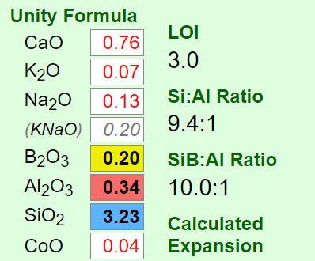
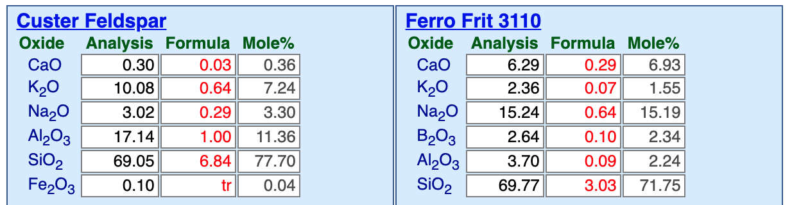

KNaO (Potassium/Sodium Oxides)
Data
| Co-efficient of Linear Expansion | 0.359 |
|---|
Notes
KNaO is a pseudo-alkali oxide used in glaze formulas. It represents the combined total of K2O and Na2O.
This KNaO designation is made possible because K2O and Na2O have such similar contributions to the fired properties of glazes that for most purposes they can be considered as the same.
The KNaO designation is also a necessity but the reason is not obvious. On this website we have many tutorials and articles about how to formulate glazes using a chemistry approach, seeing glazes as formulas of oxides rather than just recipes of materials. Materials are viewed as oxide warehouses and the step-by-step procedures in creating or adjusting glazes or substituting materials involves juggling material amounts to achieve the desired change in the oxide formula. It is easy to supply any desired amount of SiO2 using silica, or CaO from calcium carbonate or Li2O from lithium carbonate because these materials only supply just one oxide. While things get more complex when materials have two oxides (e.g. dolomite supplies both CaO and MgO, wollastonite both CaO and SiO2) the procedure is still easy to manage when materials are marshaled in the correct order. However K2O and Na2O cannot be sourced in simple one or two oxide materials, they come in feldspars and frits which commonly supply six or eight or even ten oxides. Thus bringing one of these materials into a recipe to supply K2O and/or Na2O also brings the baggage of many other oxides. In most cases a chosen feldspar or frit can be used to source KNaO and not oversupply any of the others (their shortfalls can then be supplied by simpler materials). This becomes the best-case scenario (one accepts that the best that can be done is that the total of K2O and Na2O match the KNaO target).
Some glaze types do require high K2O or high Na2O and there are things that can be done to match the K2O:Na2O ratio better. For example, when choosing a feldspar to source KNaO one can keep in mind the desired KNaO ratio in the glaze. Frits are often incorporated to increase glaze quality (by reducing the percentages of troublesome materials e.g. ones with high LOI, inconsistent or contaminated with iron) or as a source of oxides not available (or available in sufficient quantity) in raw materials. Most companies and potters have access to a wide range of frits and they can be chosen and blended to get closer to the desired KNaO ratio. But again, this is almost always not necessary, it is better to consider K2O:Na2O and KNaO.
KNaO does not have a formula weight, it does not exist (although an average of the two weights is sometimes used). Thus, when a glaze formula is calculated from a batch recipe, the KNaO is simply presented at the K2O+Na2O.
Analyses of material chemistries never combine the K2O and Na2O.
The presence of alkalis in silicate glass reduces phase separation. That is an important reason why they can produce high gloss.
Ceramic Oxide Periodic Table

Pretty well all common traditional ceramic base glazes are made from less than a dozen elements (plus oxygen). Go to the full picture of this table and click or tap each of the oxides to learn more (on its page at digitalfire.com). When materials melt, they decompose, sourcing these elements in oxide form. The kiln builds the glaze from them, it does not care what material sources what oxide (assuming, of course, that all materials do melt or dissolve completely into the melt to release those oxides). Each of these oxides contributes specific properties to the glass. So, you can look at a formula and make a good prediction of the properties of the fired glaze. And know what specific oxide to increase or decrease to move a property in a given direction (e.g. melting behavior, hardness, durability, thermal expansion, color, gloss, crystallization). And know about how they interact (affecting each other). This is powerful. A lot of ceramic materials are available, hundreds - that is complicated when individual materials source multiple oxides. Viewing a glaze as a simple unity formula of ceramic oxides is just simpler.
Why are K2O and Na2O often combined as KNaO in glaze unity formulas?

This picture has its own page with more detail, click here to see it.
Insight-Live displays the chemistry of glazes as shown here. In oxide formulas it is typical to express the total of K2O plus Na2O as KNaO. The reason goes to the heart of why viewing glazes as formulas of oxides is so much better than seeing them as just recipes of materials. K2O and Na2O are oxides contributed by feldspars and frits. They impart very similar characteristics to the fired glaze or glass. Pretty well all feldspars source both of them but frits generally have just Na2O. Using common materials it is most often impossible to match both when doing formula-to-batch calculations, so their combination is targeted instead (that being said an approximate match is still desireable).
A high feldspar glaze is settling, running and crazing. What to do?

This picture has its own page with more detail, click here to see it.
The original cone 6 recipe, WCB, fires to a beautiful brilliant deep blue green (shown in column 2 of this Insight-live screen-shot). But it is crazing and settling badly in the bucket. The crazing is because of high KNaO (potassium and sodium from the high feldspar). The settling is because there is almost no clay in the recipe. Adjustment 1 (column 3 in the picture) eliminates the feldspar and sources Al2O3 from kaolin and KNaO from Frit 3110 (preserving the glaze's chemistry). To make that happen the amounts of other materials had to be juggled. But the fired test revealed that this one, although very similar, is melting more (because the frit releases its oxides more readily than feldspar). Adjustment 2 (column 4) proposes a 10-part silica addition. SiO2 is the glass former, the more a glaze will accept without losing the intended visual character, the better. The result is less running and more durability and resistance to leaching.
Why use a frit to source KNaO at cone 10R?

This picture has its own page with more detail, click here to see it.
Here are side-by-side materials panels, in my Insight-live account, comparing Custer feldspar and Ferro Frit 3110. KNaO is not available as a pure raw material, ones that supply them, like these, also bring along other oxides (which, fortunately, are almost always needed anyway). Consider the advantages of Ferro Frit 3110 (other brands have a product of similar chemistry). The frit brings along some CaO, which means less calcium carbonate or dolomite are needed, and in the frit the CaO much more readily enters the melt. There is more KNaO in the frit, per gram, than feldspar. The frit has low Al2O3, which means alumina can be supplied by clay, imparting needed suspension and dry hardness. And, when clay supplies the alumina, it can be sourced as a mix of calcined-and-raw to tightly control working properties. The frit has a little boron, that gives it a kick to start melting earlier and impart better melt fluidity. Most of all, because it has been premelted, the frit will produce a much more fluid glass, helping to dissolve the quartz particles better. And, it will give better gloss and better reactions with matting agents. The calculation process of removing the feldspar and inserting the frit in its place is a good demonstration of the value of glaze chemistry.
Links
| Materials |
Feldspar
In ceramics, feldspars are used in glazes and clay bodies. They vitrify stonewares and porcelains. They supply KNaO flux to glazes to help them melt. |
| Glossary |
Feldspar Glazes
Feldspar is a natural mineral that, by itself, is the most similar to a high temperature stoneware glaze. Thus it is common to see alot of it in glaze recipes. Actually, too much. |
| Glossary |
Oxide Formula
In ceramics, the chemistry of fired glazes is expressed as an oxide formula. There are direct links between the oxide chemistry and the fired physical properties. |
| Glossary |
Ceramic Oxide
In glaze chemistry, the oxide is the basic unit of formulas and analyses. Knowledge of what materials supply an oxide and of how it affects the fired glass or glaze is a key to control. |
| Glossary |
Glaze Chemistry
Glaze chemistry is the study of how the oxide chemistry of glazes relate to the way they fire. It accounts for color, surface, hardness, texture, melting temperature, thermal expansion, etc. |
| Glossary |
Crackle glaze
Crackle glazes have a crack pattern that is a product of thermal expansion mismatch between body and glaze. They are not suitable on functional ware. |
| Oxides | Na2O - Sodium Oxide, Soda |
| Oxides | K2O - Potassium Oxide |
 PayPal | No tracking, No ads, No paywall, No transient content! Just organized, concise information constantly updated and improved. Was this helpful? Consider supporting me. |
| By Tony Hansen Follow me on        |  |
Got a Question?
Buy me a coffee and we can talk 

https://digitalfire.com, All Rights Reserved
Privacy Policy